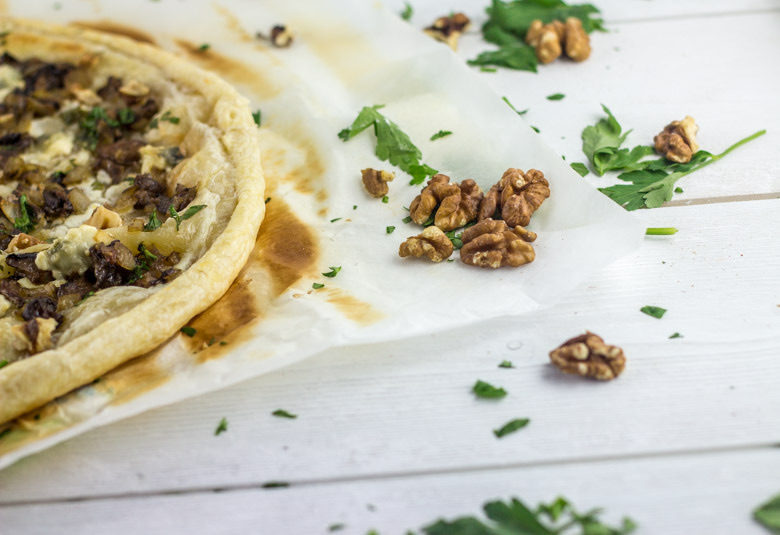
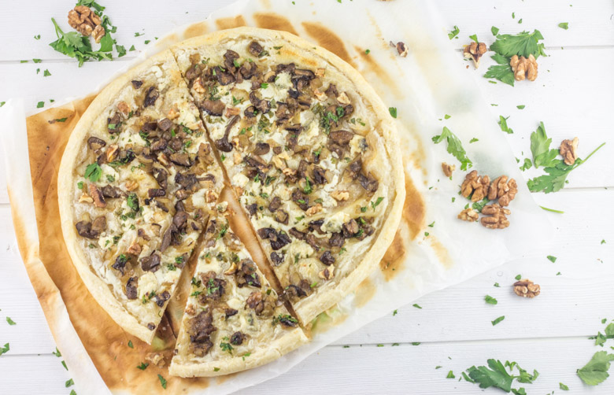

Tarte fine aux champignons, gorgonzola, noix

Me revoilà avec une toute nouvelle recette notamment pour ceux qui n’ont pas trop le temps de cuisiner mais qui ont quand même envie de se faire plaisir puisque je vous parle aujourd’hui d’une délicieuse tarte fine aux champignons, gorgonzola et noix!
Comme vous le savez certainement, j’ai perdu récemment tout le contenu du disque dur de mon ordinateur! J’ai perdu beaucoup de données personnelles mais aussi toutes les recettes qui étaient à venir sur le blog 🙁 !!! On a passé des soirées entières à essayer de le réparer puis d’autres soirées à le reconfigurer! Bref je n’avais pas vraiment de temps pour cuisiner ^^ (puis pas vraiment envie non plus!) Il a tout de même fallu que je m’y mette et quand je n’ai pas trop de temps devant moi les tartes deviennent alors mes meilleures amies! Des tartes il en existe des tonnes et j’aime particulièrement les tartes fines (ne me demandez pas pourquoi je ne le sais pas moi-même!!)!! Je me souviens une fois avoir goûter une tarte fine d’une enseigne qui ne vend que des surgelés (vous aurez deviné laquelle) aux champignons et au gorgonzola et j’en suis tombée raide dingue! Je n’osais pas trop essayer de la reproduire car les meilleurs ennemis de mon chéri sont tout de même les ingrédients principaux mais je m’y suis tout de même risquée 🙂 Entre gorgonzola, champignons forestiers, persil et quelques noix cette tarte n’avait rien pour le séduire et pourtant encore une fois la magie a opéré et il n’en a fait qu’une bouchée!!! De mon côté je dirais que c’est un milliard de fois meilleur que celle que j’avais goûtée auparavant!!
J’ai opté pour du gorgonzola-mascarpone, pour atténuer un peu le goût du gorgonzola et ça le rend encore plus crémeux! Vous pouvez accompagner cette tarte fine d’une petite salade et se sera un « diner presque parfait »!!
Enregistrer
Ingrédients
- Pâte feuilletée - 1
- Gorgonzola-mascarpone - 40g
- Champignons de votre choix - 400g
- Crème fraîche - 3 càs
- Oignon - 1
- Vin blanc - 3 càs
- Noix
- Persil
Instructions
- Émincer l'oignon très finement et faites le suer à feu doux dans une casserole avec un peu d'huile d'olive
- Couper grossièrement les champignons en forme de dés
- Ajouter les dans la casserole avec l'oignon et faites les revenir
- Saler, poivrer
- Préchauffer le four à 180°
- Ajouter le vin blanc et laisser réduire
- Dérouler votre pâte feuilletée et rouler un peu les rebords
- Étaler la crème fraîche dessus
- Parsemer de morceaux de Gorgonzola grossièrement coupés sur l'ensemble de la pâte
- Quand les champignons sont prêts ajoutez les sur la tarte en veillant à ce qu'il y en est sur l'ensemble de la tarte Astuce: égouttez au préalable pour éviter qu'il y ait du liquide sur la tarte car il en reste toujours un petit peu!!
- Ciseler du persil et ajoutez-en sur l’ensemble de la tarte ainsi que des morceaux de noix grossièrement écrasées
- Enfourner 18 minutes à 180°


Les tips de la communauté
Tarte salée appréciée pour son originalité et sa légèreté. Les visiteurs apprécient l'utilisation des champignons frais et la qualité savante du résultat. C'est une entrée ou plat léger très séduisant.
Astuces
- Bien nettoyer et sécher les champignons avant cuisson
- La finesse de la pâte est importante pour ce type de tarte
- Assaisonner généreusement les champignons
Variantes suggérées
- de ta recette avant-hier ! 😉 https://mamouandco.wordpress.com/2015/08/12/tarte-fine-aux-champignons-et-gorgonzola
- Gorgonzola et un vin blanc de Qavoie pour la cuisson et l’accompagnement. C’était juste trop bon ! :p
Ajustements signalés
- les noix dans la recette et je ne comprends pas : on ajoute le gorgonzola dans la poêle avec les champi ?